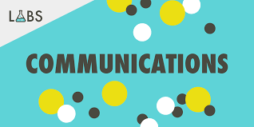

This website aims at sharing the projects of first-year students at New York University, Abu Dhabi studying Communications Lab in Interactive Media. We believe that films are one of the most powerful modes of communication and the spread of ideas and messages. Interactivity is one of the key components of filmmaking! Hope you enjoy these projects! :)
